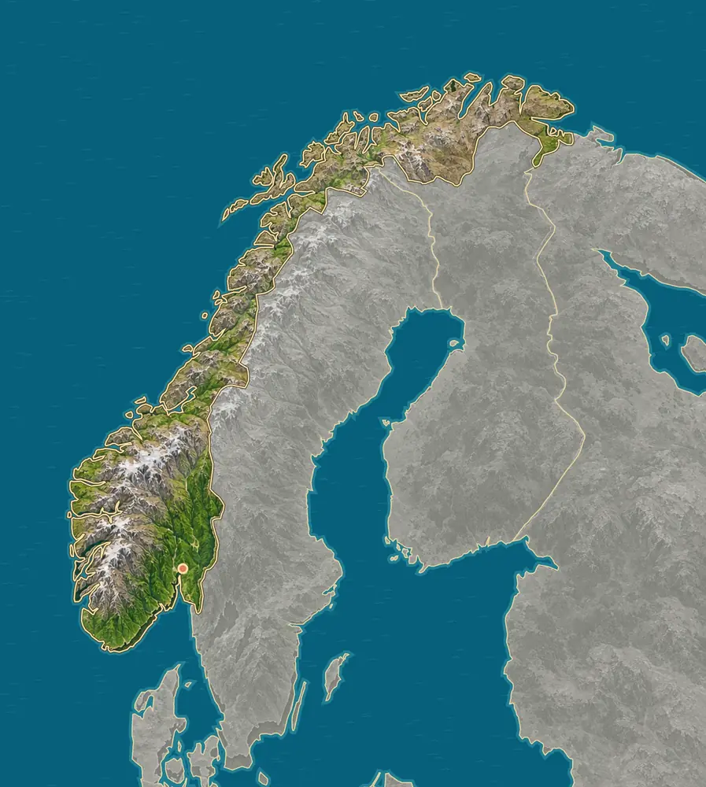
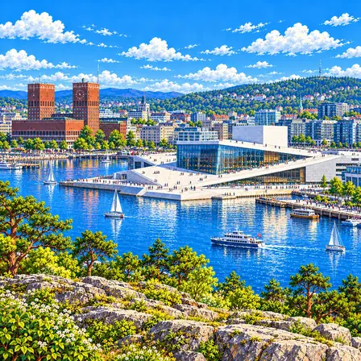
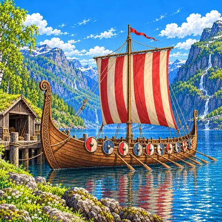
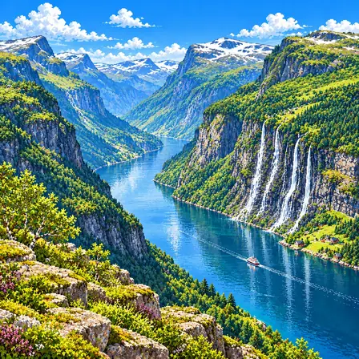
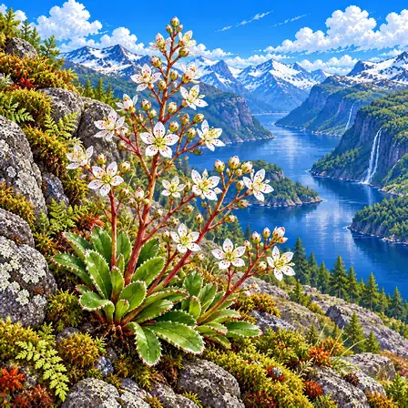
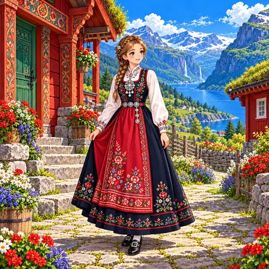
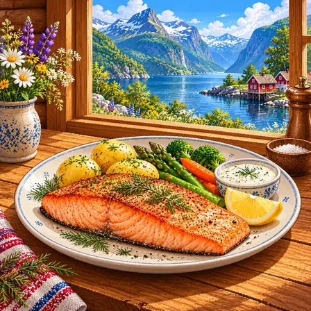
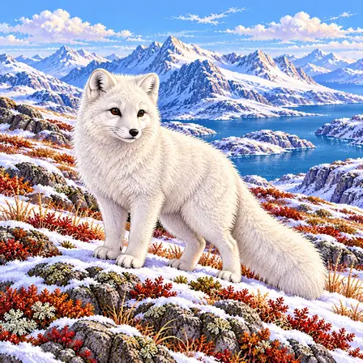
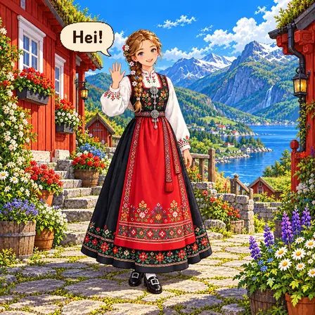

산지와 남동부 저지대
본토에는 산지와 높은 고원이 넓게 이어지고, 가장 높은 갈회피겐은 2,469m예요. 서쪽은 산과 바다가 맞닿아 있고, 오슬로 주변 남동부에는 낮은 골짜기와 마을이 펼쳐져요. 북쪽은 더 춥고 나무가 드문 툰드라가 나타나요.
출처: Store norske leksikon, Norges høyeste fjell · Geological Survey of Norway, Geological mapping

노르웨이는 산이 많고 바닷가가 아주 구불구불한 나라예요. 빙하가 깎은 깊은 골짜기에 바닷물이 들어와 피오르가 생겼어요.
노르웨이 본토는 스칸디나비아 산지가 길게 이어지고, 서해안에는 빙하가 만든 피오르와 섬이 많아요. 가장 높은 산은 갈회피겐(2,469m)이에요. 북쪽 바다에는 스발바르와 얀마옌이 있어요.
본토에는 산지와 높은 고원이 넓게 이어지고, 가장 높은 갈회피겐은 2,469m예요. 서쪽은 산과 바다가 맞닿아 있고, 오슬로 주변 남동부에는 낮은 골짜기와 마을이 펼쳐져요. 북쪽은 더 춥고 나무가 드문 툰드라가 나타나요.
출처: Store norske leksikon, Norges høyeste fjell · Geological Survey of Norway, Geological mapping
빙하는 오랜 시간 골짜기를 넓고 깊게 깎았어요. 얼음이 녹은 뒤에는 U자 모양 골짜기와 날카로운 바위 능선, 수많은 호수가 남았어요.
출처: UNESCO, West Norwegian Fjords - Geirangerfjord and Nærøyfjord · Geological Survey of Norway, Geological mapping
피오르는 빙하가 깎은 골짜기 안으로 바닷물이 들어와 생긴 좁고 긴 만이에요. 게이랑에르피오르와 네뢰위피오르처럼 양쪽에 높은 절벽과 폭포가 있어요. 서해안에는 작은 섬도 아주 많아요.
출처: UNESCO, West Norwegian Fjords - Geirangerfjord and Nærøyfjord
스발바르는 본토보다 훨씬 북쪽, 북극 가까운 바다에 있는 섬들이에요. 얀마옌은 본토 북서쪽 바다 한가운데에 홀로 떨어진 섬이에요.
출처: Kartverket, Maritime boundaries · Norwegian Polar Institute, Jan Mayen
노르웨이에는 아주 오래된 바탕 암석(기반암)과, 옛날 산맥이 만들어질 때 접히고 변한 암석이 넓게 드러나 있어요. 그 뒤 오랜 침식이 지금의 바위 지형을 만들었어요.
스발바르에서는 산과 빙하를 함께 볼 수 있고, 얀마옌에는 베렌베르그 화산이 솟아 있어요. 본토의 빙하 지형과 멀리 떨어진 화산섬은 만들어진 과정이 서로 달라요.
노르웨이에서 잘 알려진 도시, 역사유산, 자연, 식물, 문화, 음식, 동물, 인사말, 국기를 한 장씩 그렸어요.

오슬로는 노르웨이의 수도예요. 바다가 깊숙이 들어온 곳에 자리한 항구 도시예요. 해마다 노벨 평화상 시상식이 이 도시에서 열려요.
오슬로는 오슬로피오르드 안쪽에 자리한 노르웨이의 수도예요. 바다 쪽으로 낮게 기운 흰 지붕의 오페라하우스와 붉은 벽돌 탑 두 개가 선 시청이 유명해요. 항구와 현대적인 건축물 뒤로 숲과 언덕이 가까이 이어져요. 도시에는 중세의 흔적과 화재 뒤 재건된 구역이 함께 남아 있으며, 1925년에 오슬로라는 이름을 되찾았어요. 노벨 평화상 시상식은 오슬로 시청에서 열려요.

바이킹 배는 1,000년도 더 전에 바이킹이 타던 나무배예요. 나무판을 겹쳐 붙여 튼튼하게 만들었어요. 돛과 노로 먼바다까지 오갔어요.
바이킹 시대의 배는 나무 판자를 겹쳐 잇는 클링커 방식으로 만들었어요. 얕은 선체와 돛, 노는 해안과 먼바다를 오가는 데 도움이 됐으며 배의 형태는 쓰임에 따라 달랐어요. 노르웨이에서 발굴된 오세베르그호와 고크스타드호는 9세기의 대표적인 배로, 장례 매장과 함께 당시 생활을 알려주는 중요한 자료예요.

게이랑에르 피오르드는 빙하가 깎아 만든 깊은 바다 골짜기예요. 높은 절벽 사이로 바닷물이 들어와 있어요. 절벽에서 폭포가 여러 줄기로 쏟아져요.
게이랑에르 피오르드는 노르웨이 서부의 깊은 협만이에요. 여러 빙하기에 걸쳐 빙하가 계곡을 넓히고 깊게 깎았으며, 얼음이 물러난 뒤 바닷물이 들어와 지금의 풍경을 만들었어요. 급한 산비탈과 바위 절벽, 폭포와 작은 농경지가 가까이 어우러져요. 여러 줄기의 폭포는 ‘일곱 자매 폭포’로 알려져 있어요. 게이랑에르와 네뢰위 피오르드로 이루어진 서노르웨이 피오르드 유산은 2005년 유네스코 세계유산에 등재됐어요.

베르그프루에는 바위 틈에서 자라는 꽃이에요. 두툼한 잎이 바닥에 동그랗게 모여 있어요. 가느다란 꽃대에 작은 흰 꽃이 잔뜩 피어요.
베르그프루에의 학명은 Saxifraga cotyledon으로, 바위 틈에 뿌리내리는 범의귀과 식물이에요. 밑동에는 두툼하고 길쭉한 잎이 로제트 모양으로 모이고, 가느다란 꽃대가 갈라지며 작은 흰 꽃을 많이 피워요. 꽃잎은 보통 다섯 장이며 꽃 가까이에 작은 붉은 점이 있어요. 큰 꽃 한 송이보다 잎과 가지친 꽃대의 구조가 특징이에요.

부나드는 노르웨이의 전통 축제 옷이에요. 지역마다 색과 수놓은 무늬가 달라요. 5월 17일 헌법의 날에 많은 사람이 차려입어요.
부나드는 지역의 옷 전통을 바탕으로 발전한 노르웨이의 축제 의상이에요. 천과 색, 자수, 장신구의 조합은 지역과 의상에 따라 달라요. 흰 블라우스와 어두운 몸판, 치마, 무늬 있는 앞치마에 솔리에라는 은 브로치를 달아요. 제헌절인 5월 17일이나 결혼식 같은 특별한 날에 입고, 제작과 수선 기술을 가족과 공동체에서 이어가기도 해요. 노르웨이 전통 의상의 공예와 사회적 관습은 2024년 유네스코 인류무형문화유산 대표목록에 등재됐어요.

연어는 노르웨이 바다에서 나는 분홍빛 생선이에요. 굽거나 훈제해서 먹어요. 노르웨이는 세계에서 연어를 가장 많이 기르는 나라예요.
연어는 노르웨이의 바다와 식문화에서 중요한 생선이에요. 굽거나 훈제하고, 소금과 설탕·딜로 절이는 그라브락스처럼 다양한 방식으로 먹어요. 구운 연어에 감자, 채소, 레몬과 소스를 곁들여 먹기도 해요. 노르웨이는 세계에서 연어를 가장 많이 기르는 나라예요.

북극여우는 추운 땅에 사는 작은 여우예요. 귀가 작고 털이 빽빽해서 추위를 잘 견뎌요. 겨울에는 털이 눈처럼 하얗게 바뀌어요.
북극여우는 북극권 툰드라와 노르웨이의 고산 지역 등에서 사는 작은 여우예요. 작은 귀와 촘촘한 털은 열 손실을 줄이는 데 도움이 돼요. 겨울에는 털이 하얗게 바뀌고, 여름에는 더 어두워져요. 겨울에도 털이 어두운 ‘푸른색형’ 여우도 있어요. 작은 포유류와 새, 알, 사체 등 여러 먹이를 이용하며 계절과 서식지에 따라 생활 모습이 달라요.

헤이(Hei)는 노르웨이어로 '안녕'이에요. 친구에게 편하게 하는 인사예요. 헤어질 때는 '하 데'라고 해요.
Hei는 ‘헤이’라고 읽는 노르웨이어 인사말로, 일상에서 상대에게 친근하게 인사할 때 써요. 노르웨이어는 북게르만어에 속하며, 보크몰과 뉘노르스크라는 두 가지 공용 문어가 있어요. 지역마다 말하는 방식도 다양해요. 헤어질 때는 ‘하 데(Ha det)’라고 말해요.

노르웨이 국기는 빨간 바탕에 파란 십자가 있어요. 십자 둘레에는 흰 테두리가 있어요. 십자가 깃대 쪽으로 치우친 북유럽식 십자 모양이에요.
노르웨이 국기는 빨간 바탕에 흰 테두리를 두른 파란 십자가 그려져 있어요. 십자의 세로대가 깃대 쪽으로 치우친 이 모양은 '노르딕 십자'로, 북유럽 나라들이 함께 쓰는 전통 디자인이에요. 1821년에 디자인이 정해졌어요. 빨강·하양·파랑 세 색은 당시 자유의 상징으로 여겨지던 나라들의 국기 색에서 따왔다고 해요. 덴마크, 스웨덴 국기와 닮은꼴이라 북유럽 국기들을 나란히 놓고 비교해 보는 재미가 있어요.